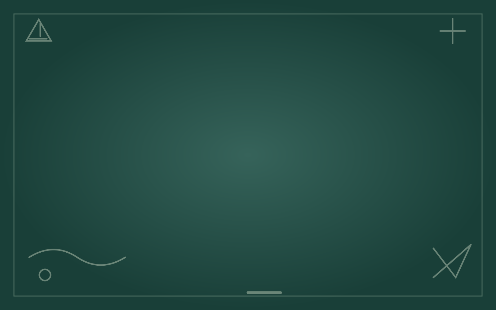
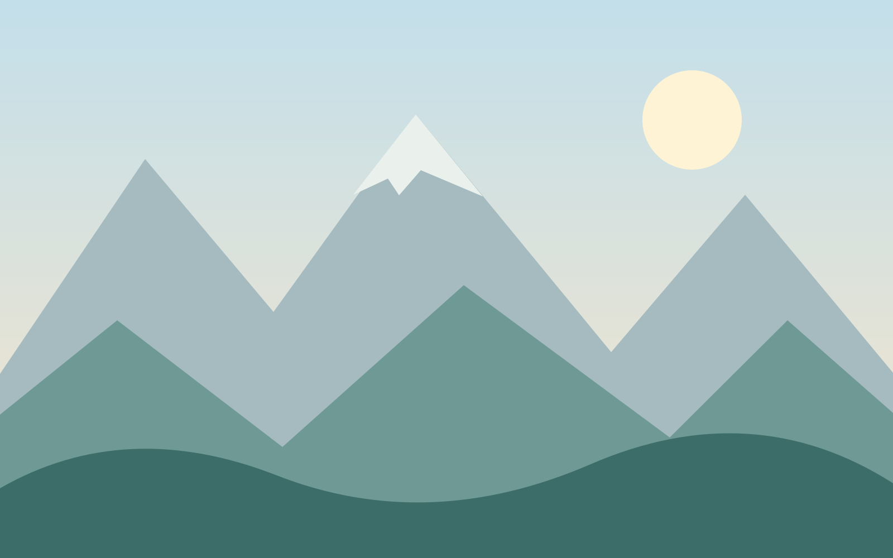
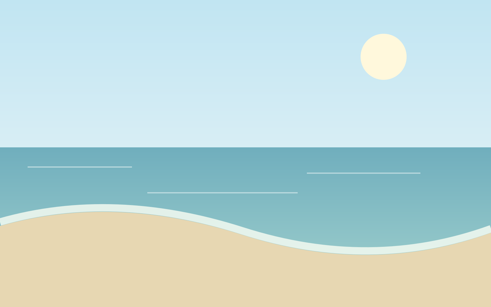

October 22, 2026 · v3.1.45
Keep the Subject. Change the Scene.
BackdropSplat and ImageSplat can now put your cutout on a new background. Upload an image, choose one of six original scenes, or enter a direct image URL.
Start with the part you want to keep
Suppose you have a classroom graphic on a white rectangle. You want the graphic on a slide, without that rectangle coming along for the ride. In BackdropSplat, add the image, choose White background, and remove it. For a photograph, choose Photo subject. For a colored backdrop, sample the color and adjust tolerance and soft edges.
White and color removal work locally without a model download. Photo removal also runs on your device, but downloads its model on first use. Check the result: hair, transparent objects, shadows, and a busy group can need more attention.
Give it a different setting
Under Choose a new background, upload your own image or choose Studio Paper, Soft Lavender, Classroom Board, Splat Confetti, Mountain Morning, or Coastal Calm. These are original illustrations included with the tools, so choosing one does not call a stock-image service.



Fill frame centers the backdrop and crops its edges as needed. Fit entire image keeps the whole background with white margins. The cutout stays in front at its original size and position. Changing the background reuses the cutout; it does not run removal again.
Use an online image, too
Paste a direct HTTPS image link and choose Load image URL. The browser downloads the background without sending your subject image, account cookies, or a referrer. Some hosts block direct browser access. If that happens, download the image and upload a local copy instead.
Optional connections must be on for an online download. Turning them off stops an active download; uploads and built-in scenes remain usable. A failed or cancelled load keeps the previous background.
Apply it inside ImageSplat
Select one or more image layers, then open Effects → Background removal…. The same backdrop choices appear below the before/after previews. Process, inspect, and choose Apply to layers. One Undo restores all selected layers. Cancel and downloads leave the document unchanged.
PNG, JPEG, and batch ZIP exports use the composition you see. PNG can retain transparency; JPEG has a solid background. Choose Transparent to recover the cutout alone.
Choose your language and take it with you
BackdropSplat’s header now includes English, Spanish, Vietnamese, Arabic, Chinese, and Hindi/Urdu. Arabic uses right-to-left layout. Your language choice is shared with the suite, and switching preserves loaded images and cutouts. Native-speaker review of the translations is pending.
Full DrawSplat and Tools v3.1.45 downloads include the tools, local browser engine, and all six scenes. The complete district suite is refreshed as v3.1.45. Photo models still download on first use. For limits and step-by-step help, read the BackdropSplat and ImageSplat guide.